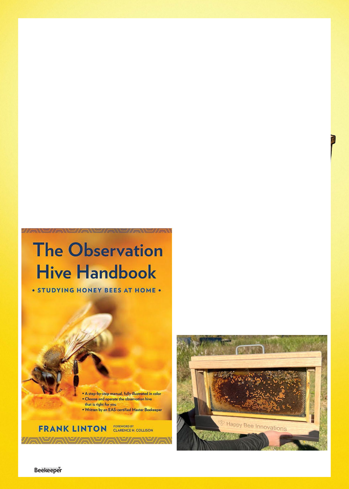

the observation hive, close it up, take it inside, and reconnect
the tube.
Occasionally you will have to clean the glass because the bees
cover it with propolis and add bits of comb to it. Suggestions
for removing propolis include alcohol, WD-40, oven cleaner,
Krud Cutter, and others. Be sure the glass is free of any trace
of these before putting the bees back into the hive.
You will have the opportunity to see the effects of varroa
mites, wax moths, small hive beetles, and other parasites,
pests, and predators, as well as the effects of the treatments
you apply. Plan ahead; will the methods you use on your other
hives be acceptable in your house? If not, come up with suit-
able alternatives.
For more information, a web page focused on observation
hives for beekeepers is: http://thebeepeeker.com. (Figure 3)
That’s bee peeker, get it?
For an in-depth discussion of everything you need to know
to select, install, operate, and maintain a permanent per-
sonal observation hive, I recommend The observation Hive
Handbook: Studying Honey Bees at Home. (Figure 4)
Observation Hives for the Public
While observation hives in one’s home or office are especially
beneficial to beekeepers for their educational and entertain-
ment value, they are equally beneficial to the public for these
same reasons. The criteria for selection and the care needed
for public observation hives is, however, not the same as for
one’s personal hive.
Two kinds of observation hive are used for public educa-
tion and entertainment, temporary portable hives, and per-
manently installed hives.
Beekeepers take temporary portable observation hives to
farmers markets, street fairs, school visits, and the like. These
are typically single-frame hives, with or without the queen. The
bees and frame in these hives are often pulled from a produc-
tion hive and returned to it on the same day. (Figure 5)
These hives are used to “show and tell” about honey bees,
beekeeping, pollinators, environmental issues, etc., and to
attract attention to the table or booth where the hive is located.
Several temporary portable observation hives are available
from beekeeping suppliers for use in public outreach, along
with a variety of informative materials. These hives typically
consist of one deep frame. A recent innovation, the Ulster
Hive, (Figure 6) consists of the frame to be displayed in con-
junction with a nuc box, so that the colony does not have to
be split up when displaying the single frame with the queen. A
good source of information about temporary public hives can
be found here: https://www.bobsbeekeeping.com.au/blog/
Setting-up-an-observation-bee-hive.
Bob’s Bees also sells the Ulster hive.
Individuals making and selling single frame observation hive
may be found on etsy and eBay.
You may also be able to borrow a portable observation hive
and other outreach materials from your local beekeeper’s asso-
ciation. Contact your association’s Outreach Coordinator.
When selecting a frame to display in one of these hives, it
pays to go through a strong colony the day before the event
and find a suitable frame. A good one will be found in the
brood nest with nurse bees, open larvae, capped brood, pollen,
nectar, honey, and open comb. People like to find the queen,
and her activities are worth displaying. The longer she is to be
away from the rest of her colony, however, the less willing I am
to include her in the display.
In contrast to temporary observation hives, permanently
installed observation hives are found in nature centers, muse-
ums, and other public educational sites. (Figure 7) These hives
require more attention than a standard hive because the col-
ony must be kept healthy and visually appealing. Also, to be
successful, a permanent public observation hive requires the
coordinated efforts of a team comprised of several roles, only
one of which is the beekeeper. For example:
• Figure 4. The Observation Hive Handbook: Studying Honey
Bees at Home.
• Figure 5. An observation hive holding a single deep frame.
30 |
| Vol. 127 | No. 4